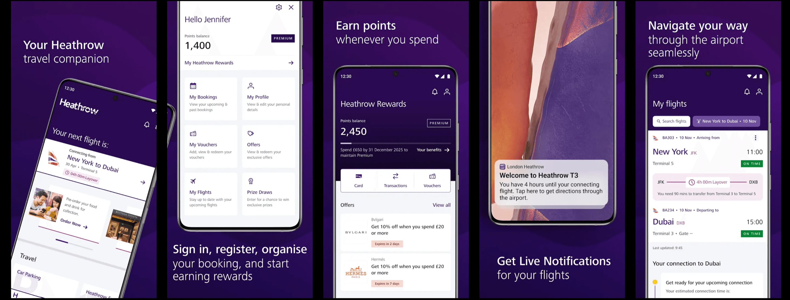
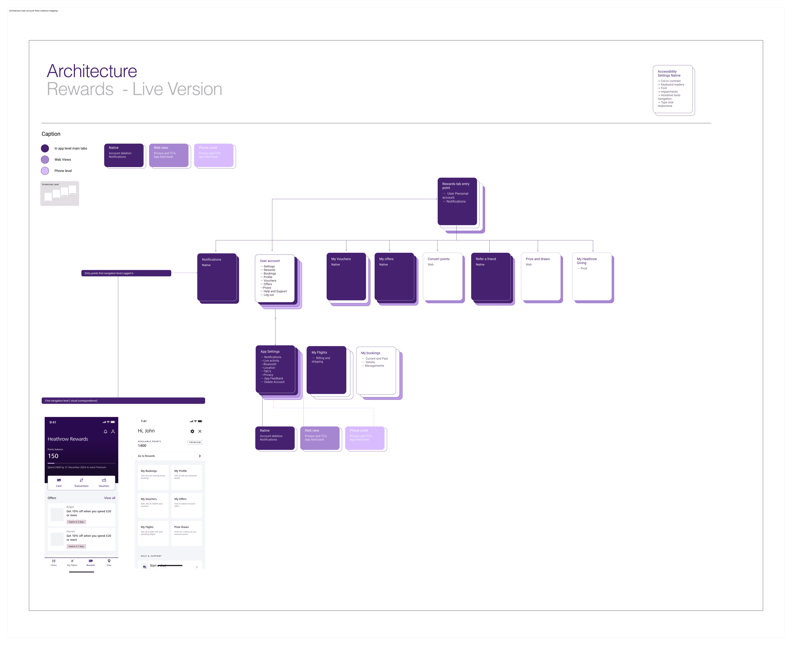
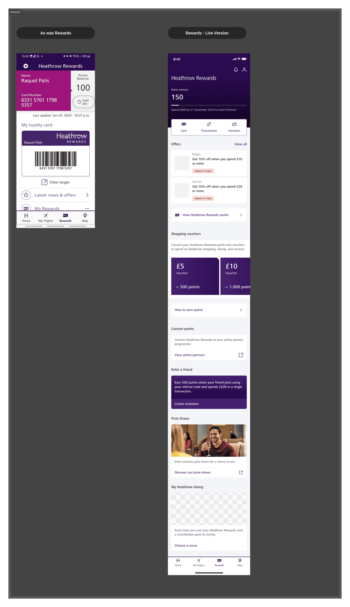
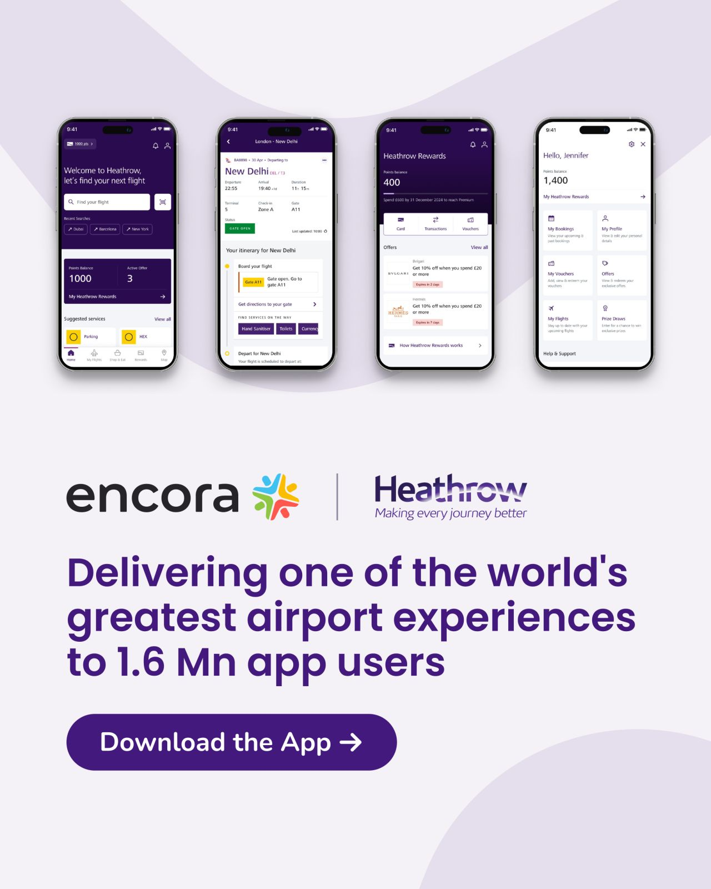
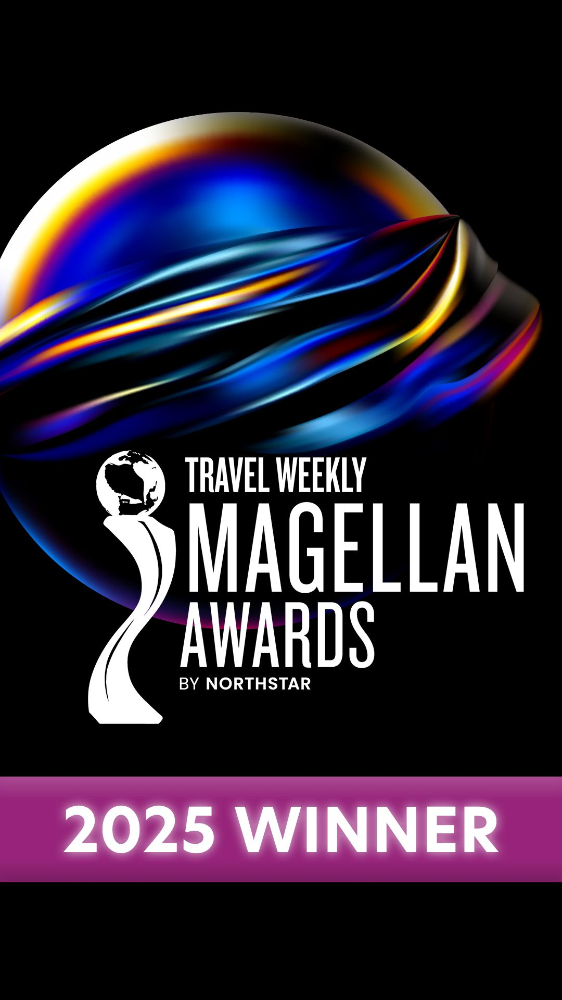

Redesigning the loyalty and airport experience for Europe's busiest airport — making it effortless for 1.6 million app users to navigate, earn, and redeem rewards on the go.

Heathrow Airport
Senior Product UX/UI Designer
Research · IA · UI · Prototype · Handoff
20 Weeks · 2024–2026
Heathrow Airport serves tens of millions of passengers annually and operates one of the most complex passenger ecosystems in the world. The mobile app is a mission-critical product, supporting real-time decision-making across flights, terminals, retail, security, and rewards.
The existing app was a legacy system with fragmented user journeys, limited contextual relevance, low engagement with the loyalty programme, and inconsistent UX patterns across features. The business objective was clear: increase passenger engagement and revenue while maintaining enterprise-grade accessibility, performance, and scalability.
How might we design a mobile experience that reduces cognitive load in high-stress, time-sensitive environments — and scales across diverse passenger profiles and travel intents?
End-to-end passenger journeys mapped across arrival, departure, transit, and dwell time. Pain points clustered around loyalty visibility, flight status, and wayfinding.
Analytics and funnel data revealed where users dropped off, which features were underused, and which moments drove the highest re-engagement potential.
Benchmarked against leading loyalty and travel apps globally. Identified opportunities for progressive disclosure, contextual UX, and system-thinking at scale.

Rewards Architecture — Live Version · IA restructure mapping all user pathways across the loyalty programme
I followed a product-led UX process combining discovery, delivery, and optimisation — leading design end-to-end from problem framing to developer handover, across multiple squads.
Restructured navigation and content hierarchy based on passenger mental models and task frequency at the airport.
Lo-fi to mid-fi flows for core journeys: rewards, flights, wayfinding, and retail. Tested across 2 usability rounds with real users.
Modular, accessible components with clear hierarchy for time-critical content. Reduced design and development friction across squads.
Interactive high-fidelity prototype for stakeholder sign-off. Full dev handoff aligned to Heathrow brand and accessibility standards.

Before → After · Heathrow Rewards redesign — from legacy app to the live version shipped in 2024
A contextual, moment-led app experience that meets passengers exactly where they are — whether planning ahead, navigating the airport, or discovering rewards. Key features redesigned: home dashboard, flight tracker, rewards card, live notifications, and wayfinding.
Streamlined onboarding and loyalty card access — reduce friction from registration to first reward in under 60 seconds.
Contextual offers and points balance surfaced at the right moment in the journey, driving higher loyalty engagement.
Real-time gate updates and flight alerts reduce anxiety in high-stress airport environments, keeping passengers informed.
Wayfinding integrated into the app experience, guiding passengers through one of the world's largest and busiest terminals.


The redesigned Heathrow app won Gold at the Travel Weekly Magellan Awards 2025 in the Airport — Overall Mobile App category, recognising excellence in digital travel experiences.
Working at Heathrow scale meant designing for one of the most demanding, diverse user bases in the world — millions of passengers from different cultures, with different needs, under real time pressure. The most valuable lesson was that contextual relevance beats feature richness. A notification at the right moment is worth ten screens of information. I'm proud that the work shipped, scaled, and won — but what stays with me most is seeing real passengers use it better.